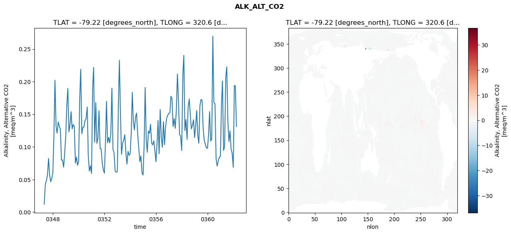
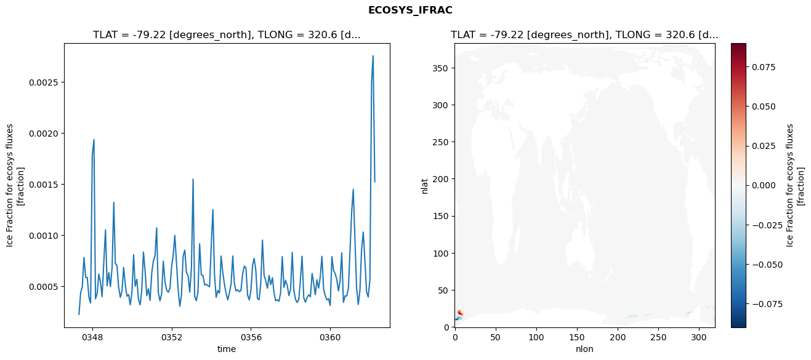
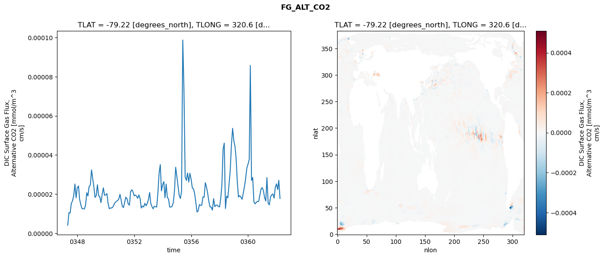
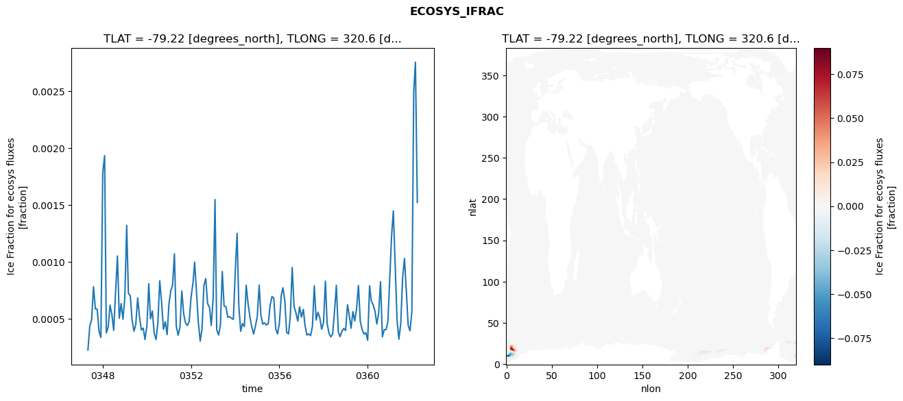
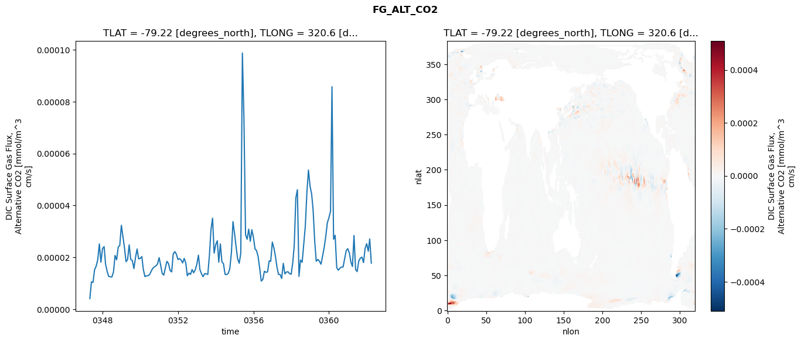
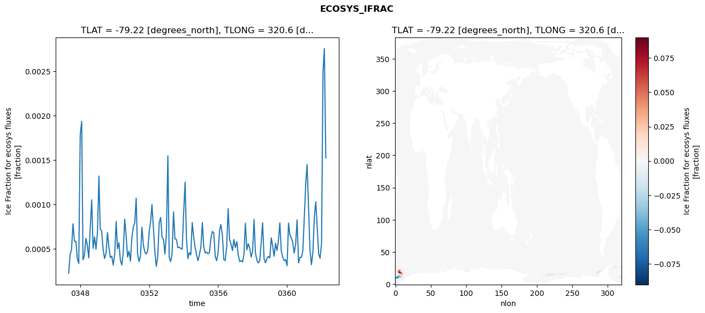
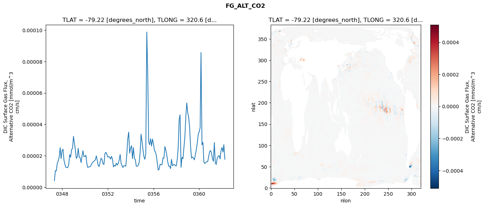

glb-dor_North_Atlantic_basin_030_1999-04-01_00121#
Simulation details#
Case: smyle.cdr-atlas-v0.glb-dor_North_Atlantic_basin_030_1999-04-01_00121.001
Basin: North_Atlantic_basin
Polygon: 30.0
Start date: 1999-04
Show code cell source Hide code cell source
import xarray as xr
import matplotlib.pyplot as plt
Show code cell source Hide code cell source
zarr_store = "/path/to/zarr/store"
# Parameters
zarr_store = "/global/cfs/projectdirs/m4746/Projects/Ocean-CDR-Atlas-v0/data/validation/smyle.cdr-atlas-v0.glb-dor_North_Atlantic_basin_030_1999-04-01_00121.001.validation.zarr"
Show code cell source Hide code cell source
%%time
ds_o = xr.open_zarr(zarr_store).compute()
ds_o
CPU times: user 651 ms, sys: 472 ms, total: 1.12 s
Wall time: 1.42 s
<xarray.Dataset> Size: 2MB
Dimensions: (nlat: 384, nlon: 320, time: 180)
Coordinates:
TLAT float64 8B -79.22
TLONG float64 8B 320.6
ULAT float64 8B -78.95
ULONG float64 8B 321.1
* time (time) object 1kB 0347-05-01 00:00:00 ... 0362-04-01 0...
z_t float32 4B 500.0
Dimensions without coordinates: nlat, nlon
Data variables:
ALK_ALT_CO2_diff (nlat, nlon) float32 492kB nan nan nan ... nan nan nan
ALK_ALT_CO2_rmse (time) float64 1kB 0.01201 0.04342 ... 0.1935 0.1313
DIC_ALT_CO2_diff (nlat, nlon) float32 492kB nan nan nan ... nan nan nan
DIC_ALT_CO2_rmse (time) float64 1kB 0.01656 0.05598 ... 0.2101 0.1668
ECOSYS_IFRAC_diff (nlat, nlon) float32 492kB nan nan nan ... nan nan nan
ECOSYS_IFRAC_rmse (time) float64 1kB 0.0002243 0.0004367 ... 0.001521
FG_ALT_CO2_diff (nlat, nlon) float32 492kB nan nan nan ... nan nan nan
FG_ALT_CO2_rmse (time) float64 1kB 4.07e-06 1.051e-05 ... 1.773e-05xarray.Dataset
- nlat: 384
- nlon: 320
- time: 180
- TLAT()float64-79.22
- long_name :
- array of t-grid latitudes
- units :
- degrees_north
array(-79.22052261)
- TLONG()float64320.6
- long_name :
- array of t-grid longitudes
- units :
- degrees_east
array(320.56250892)
- ULAT()float64-78.95
- long_name :
- array of u-grid latitudes
- units :
- degrees_north
array(-78.95289509)
- ULONG()float64321.1
- long_name :
- array of u-grid longitudes
- units :
- degrees_east
array(321.12500894)
- time(time)object0347-05-01 00:00:00 ... 0362-04-...
- bounds :
- time_bound
- long_name :
- time
array([cftime.DatetimeNoLeap(347, 5, 1, 0, 0, 0, 0, has_year_zero=True), cftime.DatetimeNoLeap(347, 6, 1, 0, 0, 0, 0, has_year_zero=True), cftime.DatetimeNoLeap(347, 7, 1, 0, 0, 0, 0, has_year_zero=True), cftime.DatetimeNoLeap(347, 8, 1, 0, 0, 0, 0, has_year_zero=True), cftime.DatetimeNoLeap(347, 9, 1, 0, 0, 0, 0, has_year_zero=True), cftime.DatetimeNoLeap(347, 10, 1, 0, 0, 0, 0, has_year_zero=True), cftime.DatetimeNoLeap(347, 11, 1, 0, 0, 0, 0, has_year_zero=True), cftime.DatetimeNoLeap(347, 12, 1, 0, 0, 0, 0, has_year_zero=True), cftime.DatetimeNoLeap(348, 1, 1, 0, 0, 0, 0, has_year_zero=True), cftime.DatetimeNoLeap(348, 2, 1, 0, 0, 0, 0, has_year_zero=True), cftime.DatetimeNoLeap(348, 3, 1, 0, 0, 0, 0, has_year_zero=True), cftime.DatetimeNoLeap(348, 4, 1, 0, 0, 0, 0, has_year_zero=True), cftime.DatetimeNoLeap(348, 5, 1, 0, 0, 0, 0, has_year_zero=True), cftime.DatetimeNoLeap(348, 6, 1, 0, 0, 0, 0, has_year_zero=True), cftime.DatetimeNoLeap(348, 7, 1, 0, 0, 0, 0, has_year_zero=True), cftime.DatetimeNoLeap(348, 8, 1, 0, 0, 0, 0, has_year_zero=True), cftime.DatetimeNoLeap(348, 9, 1, 0, 0, 0, 0, has_year_zero=True), cftime.DatetimeNoLeap(348, 10, 1, 0, 0, 0, 0, has_year_zero=True), cftime.DatetimeNoLeap(348, 11, 1, 0, 0, 0, 0, has_year_zero=True), cftime.DatetimeNoLeap(348, 12, 1, 0, 0, 0, 0, has_year_zero=True), cftime.DatetimeNoLeap(349, 1, 1, 0, 0, 0, 0, has_year_zero=True), cftime.DatetimeNoLeap(349, 2, 1, 0, 0, 0, 0, has_year_zero=True), cftime.DatetimeNoLeap(349, 3, 1, 0, 0, 0, 0, has_year_zero=True), cftime.DatetimeNoLeap(349, 4, 1, 0, 0, 0, 0, has_year_zero=True), cftime.DatetimeNoLeap(349, 5, 1, 0, 0, 0, 0, has_year_zero=True), cftime.DatetimeNoLeap(349, 6, 1, 0, 0, 0, 0, has_year_zero=True), cftime.DatetimeNoLeap(349, 7, 1, 0, 0, 0, 0, has_year_zero=True), cftime.DatetimeNoLeap(349, 8, 1, 0, 0, 0, 0, has_year_zero=True), cftime.DatetimeNoLeap(349, 9, 1, 0, 0, 0, 0, has_year_zero=True), cftime.DatetimeNoLeap(349, 10, 1, 0, 0, 0, 0, has_year_zero=True), cftime.DatetimeNoLeap(349, 11, 1, 0, 0, 0, 0, has_year_zero=True), cftime.DatetimeNoLeap(349, 12, 1, 0, 0, 0, 0, has_year_zero=True), cftime.DatetimeNoLeap(350, 1, 1, 0, 0, 0, 0, has_year_zero=True), cftime.DatetimeNoLeap(350, 2, 1, 0, 0, 0, 0, has_year_zero=True), cftime.DatetimeNoLeap(350, 3, 1, 0, 0, 0, 0, has_year_zero=True), cftime.DatetimeNoLeap(350, 4, 1, 0, 0, 0, 0, has_year_zero=True), cftime.DatetimeNoLeap(350, 5, 1, 0, 0, 0, 0, has_year_zero=True), cftime.DatetimeNoLeap(350, 6, 1, 0, 0, 0, 0, has_year_zero=True), cftime.DatetimeNoLeap(350, 7, 1, 0, 0, 0, 0, has_year_zero=True), cftime.DatetimeNoLeap(350, 8, 1, 0, 0, 0, 0, has_year_zero=True), cftime.DatetimeNoLeap(350, 9, 1, 0, 0, 0, 0, has_year_zero=True), cftime.DatetimeNoLeap(350, 10, 1, 0, 0, 0, 0, has_year_zero=True), cftime.DatetimeNoLeap(350, 11, 1, 0, 0, 0, 0, has_year_zero=True), cftime.DatetimeNoLeap(350, 12, 1, 0, 0, 0, 0, has_year_zero=True), cftime.DatetimeNoLeap(351, 1, 1, 0, 0, 0, 0, has_year_zero=True), cftime.DatetimeNoLeap(351, 2, 1, 0, 0, 0, 0, has_year_zero=True), cftime.DatetimeNoLeap(351, 3, 1, 0, 0, 0, 0, has_year_zero=True), cftime.DatetimeNoLeap(351, 4, 1, 0, 0, 0, 0, has_year_zero=True), cftime.DatetimeNoLeap(351, 5, 1, 0, 0, 0, 0, has_year_zero=True), cftime.DatetimeNoLeap(351, 6, 1, 0, 0, 0, 0, has_year_zero=True), cftime.DatetimeNoLeap(351, 7, 1, 0, 0, 0, 0, has_year_zero=True), cftime.DatetimeNoLeap(351, 8, 1, 0, 0, 0, 0, has_year_zero=True), cftime.DatetimeNoLeap(351, 9, 1, 0, 0, 0, 0, has_year_zero=True), cftime.DatetimeNoLeap(351, 10, 1, 0, 0, 0, 0, has_year_zero=True), cftime.DatetimeNoLeap(351, 11, 1, 0, 0, 0, 0, has_year_zero=True), cftime.DatetimeNoLeap(351, 12, 1, 0, 0, 0, 0, has_year_zero=True), cftime.DatetimeNoLeap(352, 1, 1, 0, 0, 0, 0, has_year_zero=True), cftime.DatetimeNoLeap(352, 2, 1, 0, 0, 0, 0, has_year_zero=True), cftime.DatetimeNoLeap(352, 3, 1, 0, 0, 0, 0, has_year_zero=True), cftime.DatetimeNoLeap(352, 4, 1, 0, 0, 0, 0, has_year_zero=True), cftime.DatetimeNoLeap(352, 5, 1, 0, 0, 0, 0, has_year_zero=True), cftime.DatetimeNoLeap(352, 6, 1, 0, 0, 0, 0, has_year_zero=True), cftime.DatetimeNoLeap(352, 7, 1, 0, 0, 0, 0, has_year_zero=True), cftime.DatetimeNoLeap(352, 8, 1, 0, 0, 0, 0, has_year_zero=True), cftime.DatetimeNoLeap(352, 9, 1, 0, 0, 0, 0, has_year_zero=True), cftime.DatetimeNoLeap(352, 10, 1, 0, 0, 0, 0, has_year_zero=True), cftime.DatetimeNoLeap(352, 11, 1, 0, 0, 0, 0, has_year_zero=True), cftime.DatetimeNoLeap(352, 12, 1, 0, 0, 0, 0, has_year_zero=True), cftime.DatetimeNoLeap(353, 1, 1, 0, 0, 0, 0, has_year_zero=True), cftime.DatetimeNoLeap(353, 2, 1, 0, 0, 0, 0, has_year_zero=True), cftime.DatetimeNoLeap(353, 3, 1, 0, 0, 0, 0, has_year_zero=True), cftime.DatetimeNoLeap(353, 4, 1, 0, 0, 0, 0, has_year_zero=True), cftime.DatetimeNoLeap(353, 5, 1, 0, 0, 0, 0, has_year_zero=True), cftime.DatetimeNoLeap(353, 6, 1, 0, 0, 0, 0, has_year_zero=True), cftime.DatetimeNoLeap(353, 7, 1, 0, 0, 0, 0, has_year_zero=True), cftime.DatetimeNoLeap(353, 8, 1, 0, 0, 0, 0, has_year_zero=True), cftime.DatetimeNoLeap(353, 9, 1, 0, 0, 0, 0, has_year_zero=True), cftime.DatetimeNoLeap(353, 10, 1, 0, 0, 0, 0, has_year_zero=True), cftime.DatetimeNoLeap(353, 11, 1, 0, 0, 0, 0, has_year_zero=True), cftime.DatetimeNoLeap(353, 12, 1, 0, 0, 0, 0, has_year_zero=True), cftime.DatetimeNoLeap(354, 1, 1, 0, 0, 0, 0, has_year_zero=True), cftime.DatetimeNoLeap(354, 2, 1, 0, 0, 0, 0, has_year_zero=True), cftime.DatetimeNoLeap(354, 3, 1, 0, 0, 0, 0, has_year_zero=True), cftime.DatetimeNoLeap(354, 4, 1, 0, 0, 0, 0, has_year_zero=True), cftime.DatetimeNoLeap(354, 5, 1, 0, 0, 0, 0, has_year_zero=True), cftime.DatetimeNoLeap(354, 6, 1, 0, 0, 0, 0, has_year_zero=True), cftime.DatetimeNoLeap(354, 7, 1, 0, 0, 0, 0, has_year_zero=True), cftime.DatetimeNoLeap(354, 8, 1, 0, 0, 0, 0, has_year_zero=True), cftime.DatetimeNoLeap(354, 9, 1, 0, 0, 0, 0, has_year_zero=True), cftime.DatetimeNoLeap(354, 10, 1, 0, 0, 0, 0, has_year_zero=True), cftime.DatetimeNoLeap(354, 11, 1, 0, 0, 0, 0, has_year_zero=True), cftime.DatetimeNoLeap(354, 12, 1, 0, 0, 0, 0, has_year_zero=True), cftime.DatetimeNoLeap(355, 1, 1, 0, 0, 0, 0, has_year_zero=True), cftime.DatetimeNoLeap(355, 2, 1, 0, 0, 0, 0, has_year_zero=True), cftime.DatetimeNoLeap(355, 3, 1, 0, 0, 0, 0, has_year_zero=True), cftime.DatetimeNoLeap(355, 4, 1, 0, 0, 0, 0, has_year_zero=True), cftime.DatetimeNoLeap(355, 5, 1, 0, 0, 0, 0, has_year_zero=True), cftime.DatetimeNoLeap(355, 6, 1, 0, 0, 0, 0, has_year_zero=True), cftime.DatetimeNoLeap(355, 7, 1, 0, 0, 0, 0, has_year_zero=True), cftime.DatetimeNoLeap(355, 8, 1, 0, 0, 0, 0, has_year_zero=True), cftime.DatetimeNoLeap(355, 9, 1, 0, 0, 0, 0, has_year_zero=True), cftime.DatetimeNoLeap(355, 10, 1, 0, 0, 0, 0, has_year_zero=True), cftime.DatetimeNoLeap(355, 11, 1, 0, 0, 0, 0, has_year_zero=True), cftime.DatetimeNoLeap(355, 12, 1, 0, 0, 0, 0, has_year_zero=True), cftime.DatetimeNoLeap(356, 1, 1, 0, 0, 0, 0, has_year_zero=True), cftime.DatetimeNoLeap(356, 2, 1, 0, 0, 0, 0, has_year_zero=True), cftime.DatetimeNoLeap(356, 3, 1, 0, 0, 0, 0, has_year_zero=True), cftime.DatetimeNoLeap(356, 4, 1, 0, 0, 0, 0, has_year_zero=True), cftime.DatetimeNoLeap(356, 5, 1, 0, 0, 0, 0, has_year_zero=True), cftime.DatetimeNoLeap(356, 6, 1, 0, 0, 0, 0, has_year_zero=True), cftime.DatetimeNoLeap(356, 7, 1, 0, 0, 0, 0, has_year_zero=True), cftime.DatetimeNoLeap(356, 8, 1, 0, 0, 0, 0, has_year_zero=True), cftime.DatetimeNoLeap(356, 9, 1, 0, 0, 0, 0, has_year_zero=True), cftime.DatetimeNoLeap(356, 10, 1, 0, 0, 0, 0, has_year_zero=True), cftime.DatetimeNoLeap(356, 11, 1, 0, 0, 0, 0, has_year_zero=True), cftime.DatetimeNoLeap(356, 12, 1, 0, 0, 0, 0, has_year_zero=True), cftime.DatetimeNoLeap(357, 1, 1, 0, 0, 0, 0, has_year_zero=True), cftime.DatetimeNoLeap(357, 2, 1, 0, 0, 0, 0, has_year_zero=True), cftime.DatetimeNoLeap(357, 3, 1, 0, 0, 0, 0, has_year_zero=True), cftime.DatetimeNoLeap(357, 4, 1, 0, 0, 0, 0, has_year_zero=True), cftime.DatetimeNoLeap(357, 5, 1, 0, 0, 0, 0, has_year_zero=True), cftime.DatetimeNoLeap(357, 6, 1, 0, 0, 0, 0, has_year_zero=True), cftime.DatetimeNoLeap(357, 7, 1, 0, 0, 0, 0, has_year_zero=True), cftime.DatetimeNoLeap(357, 8, 1, 0, 0, 0, 0, has_year_zero=True), cftime.DatetimeNoLeap(357, 9, 1, 0, 0, 0, 0, has_year_zero=True), cftime.DatetimeNoLeap(357, 10, 1, 0, 0, 0, 0, has_year_zero=True), cftime.DatetimeNoLeap(357, 11, 1, 0, 0, 0, 0, has_year_zero=True), cftime.DatetimeNoLeap(357, 12, 1, 0, 0, 0, 0, has_year_zero=True), cftime.DatetimeNoLeap(358, 1, 1, 0, 0, 0, 0, has_year_zero=True), cftime.DatetimeNoLeap(358, 2, 1, 0, 0, 0, 0, has_year_zero=True), cftime.DatetimeNoLeap(358, 3, 1, 0, 0, 0, 0, has_year_zero=True), cftime.DatetimeNoLeap(358, 4, 1, 0, 0, 0, 0, has_year_zero=True), cftime.DatetimeNoLeap(358, 5, 1, 0, 0, 0, 0, has_year_zero=True), cftime.DatetimeNoLeap(358, 6, 1, 0, 0, 0, 0, has_year_zero=True), cftime.DatetimeNoLeap(358, 7, 1, 0, 0, 0, 0, has_year_zero=True), cftime.DatetimeNoLeap(358, 8, 1, 0, 0, 0, 0, has_year_zero=True), cftime.DatetimeNoLeap(358, 9, 1, 0, 0, 0, 0, has_year_zero=True), cftime.DatetimeNoLeap(358, 10, 1, 0, 0, 0, 0, has_year_zero=True), cftime.DatetimeNoLeap(358, 11, 1, 0, 0, 0, 0, has_year_zero=True), cftime.DatetimeNoLeap(358, 12, 1, 0, 0, 0, 0, has_year_zero=True), cftime.DatetimeNoLeap(359, 1, 1, 0, 0, 0, 0, has_year_zero=True), cftime.DatetimeNoLeap(359, 2, 1, 0, 0, 0, 0, has_year_zero=True), cftime.DatetimeNoLeap(359, 3, 1, 0, 0, 0, 0, has_year_zero=True), cftime.DatetimeNoLeap(359, 4, 1, 0, 0, 0, 0, has_year_zero=True), cftime.DatetimeNoLeap(359, 5, 1, 0, 0, 0, 0, has_year_zero=True), cftime.DatetimeNoLeap(359, 6, 1, 0, 0, 0, 0, has_year_zero=True), cftime.DatetimeNoLeap(359, 7, 1, 0, 0, 0, 0, has_year_zero=True), cftime.DatetimeNoLeap(359, 8, 1, 0, 0, 0, 0, has_year_zero=True), cftime.DatetimeNoLeap(359, 9, 1, 0, 0, 0, 0, has_year_zero=True), cftime.DatetimeNoLeap(359, 10, 1, 0, 0, 0, 0, has_year_zero=True), cftime.DatetimeNoLeap(359, 11, 1, 0, 0, 0, 0, has_year_zero=True), cftime.DatetimeNoLeap(359, 12, 1, 0, 0, 0, 0, has_year_zero=True), cftime.DatetimeNoLeap(360, 1, 1, 0, 0, 0, 0, has_year_zero=True), cftime.DatetimeNoLeap(360, 2, 1, 0, 0, 0, 0, has_year_zero=True), cftime.DatetimeNoLeap(360, 3, 1, 0, 0, 0, 0, has_year_zero=True), cftime.DatetimeNoLeap(360, 4, 1, 0, 0, 0, 0, has_year_zero=True), cftime.DatetimeNoLeap(360, 5, 1, 0, 0, 0, 0, has_year_zero=True), cftime.DatetimeNoLeap(360, 6, 1, 0, 0, 0, 0, has_year_zero=True), cftime.DatetimeNoLeap(360, 7, 1, 0, 0, 0, 0, has_year_zero=True), cftime.DatetimeNoLeap(360, 8, 1, 0, 0, 0, 0, has_year_zero=True), cftime.DatetimeNoLeap(360, 9, 1, 0, 0, 0, 0, has_year_zero=True), cftime.DatetimeNoLeap(360, 10, 1, 0, 0, 0, 0, has_year_zero=True), cftime.DatetimeNoLeap(360, 11, 1, 0, 0, 0, 0, has_year_zero=True), cftime.DatetimeNoLeap(360, 12, 1, 0, 0, 0, 0, has_year_zero=True), cftime.DatetimeNoLeap(361, 1, 1, 0, 0, 0, 0, has_year_zero=True), cftime.DatetimeNoLeap(361, 2, 1, 0, 0, 0, 0, has_year_zero=True), cftime.DatetimeNoLeap(361, 3, 1, 0, 0, 0, 0, has_year_zero=True), cftime.DatetimeNoLeap(361, 4, 1, 0, 0, 0, 0, has_year_zero=True), cftime.DatetimeNoLeap(361, 5, 1, 0, 0, 0, 0, has_year_zero=True), cftime.DatetimeNoLeap(361, 6, 1, 0, 0, 0, 0, has_year_zero=True), cftime.DatetimeNoLeap(361, 7, 1, 0, 0, 0, 0, has_year_zero=True), cftime.DatetimeNoLeap(361, 8, 1, 0, 0, 0, 0, has_year_zero=True), cftime.DatetimeNoLeap(361, 9, 1, 0, 0, 0, 0, has_year_zero=True), cftime.DatetimeNoLeap(361, 10, 1, 0, 0, 0, 0, has_year_zero=True), cftime.DatetimeNoLeap(361, 11, 1, 0, 0, 0, 0, has_year_zero=True), cftime.DatetimeNoLeap(361, 12, 1, 0, 0, 0, 0, has_year_zero=True), cftime.DatetimeNoLeap(362, 1, 1, 0, 0, 0, 0, has_year_zero=True), cftime.DatetimeNoLeap(362, 2, 1, 0, 0, 0, 0, has_year_zero=True), cftime.DatetimeNoLeap(362, 3, 1, 0, 0, 0, 0, has_year_zero=True), cftime.DatetimeNoLeap(362, 4, 1, 0, 0, 0, 0, has_year_zero=True)], dtype=object) - z_t()float32500.0
- long_name :
- depth from surface to midpoint of layer
- positive :
- down
- units :
- centimeters
- valid_max :
- 537500.0
- valid_min :
- 500.0
array(500., dtype=float32)
- ALK_ALT_CO2_diff(nlat, nlon)float32nan nan nan nan ... nan nan nan nan
- cell_methods :
- time: mean
- grid_loc :
- 3111
- long_name :
- Alkalinity, Alternative CO2
- units :
- meq/m^3
array([[ nan, nan, nan, ..., nan, nan, nan], [ nan, nan, nan, ..., nan, nan, nan], [0.03833008, 0.0534668 , 0.05883789, ..., nan, nan, nan], ..., [ nan, nan, nan, ..., nan, nan, nan], [ nan, nan, nan, ..., nan, nan, nan], [ nan, nan, nan, ..., nan, nan, nan]], dtype=float32) - ALK_ALT_CO2_rmse(time)float640.01201 0.04342 ... 0.1935 0.1313
- cell_methods :
- time: mean
- grid_loc :
- 3111
- long_name :
- Alkalinity, Alternative CO2
- units :
- meq/m^3
array([0.01201432, 0.04342072, 0.0477081 , 0.05717853, 0.08225983, 0.05696532, 0.04669061, 0.05167178, 0.06042405, 0.12099674, 0.20223565, 0.13218175, 0.12111173, 0.13810533, 0.13197772, 0.12706322, 0.07981826, 0.0799002 , 0.06889412, 0.08966728, 0.11758347, 0.16482067, 0.18950277, 0.12309724, 0.13323271, 0.15406744, 0.12757073, 0.13442359, 0.13104213, 0.07519476, 0.08444746, 0.07165513, 0.07859616, 0.17546267, 0.21900043, 0.12013231, 0.12995396, 0.13071207, 0.14042843, 0.14356814, 0.16109003, 0.0861723 , 0.0629355 , 0.07115338, 0.05939388, 0.18992888, 0.22182015, 0.10711518, 0.16804695, 0.10548334, 0.11321414, 0.15553177, 0.09753321, 0.09694508, 0.07479678, 0.0646941 , 0.05979011, 0.10860188, 0.16987075, 0.10624151, 0.11458042, 0.10615266, 0.12033366, 0.19004929, 0.09625755, 0.09069033, 0.06291271, 0.06115446, 0.06203461, 0.16420152, 0.23272115, 0.14963906, 0.08863647, 0.1061357 , 0.1101129 , 0.11867417, 0.09155801, 0.07373146, 0.09317671, 0.08706611, 0.08957999, 0.12286644, 0.18366716, 0.13849959, 0.12588802, 0.14574822, 0.15179553, 0.12000129, 0.09799372, 0.07742436, 0.08615112, 0.06064834, 0.05681095, 0.10477289, 0.19101142, 0.11149903, 0.09174294, 0.12429963, 0.12066248, 0.13469601, 0.10574326, 0.10316554, 0.10943817, 0.0948794 , 0.07735736, 0.10582278, 0.14039938, 0.08958923, 0.15733485, 0.11535463, 0.09923991, 0.13876277, 0.10334746, 0.13142119, 0.14407204, 0.14853736, 0.15146169, 0.15249538, 0.17767112, 0.17376228, 0.13106984, 0.14343181, 0.12838997, 0.15587774, 0.21170947, 0.17132203, 0.11844984, 0.11667594, 0.0943072 , 0.21011018, 0.24033228, 0.12500507, 0.14185413, 0.11164436, 0.16067036, 0.17347662, 0.14962409, 0.12767405, 0.13335195, 0.141567 , 0.11423188, 0.13336094, 0.15582971, 0.11720539, 0.10565546, 0.16367134, 0.17270154, 0.17137556, 0.12779569, 0.10973808, 0.10408246, 0.09862817, 0.09779709, 0.1192319 , 0.1540686 , 0.10901507, 0.1123549 , 0.26954984, 0.16796026, 0.16617171, 0.082514 , 0.07059399, 0.07869828, 0.08412248, 0.08516666, 0.16426433, 0.2009959 , 0.09458166, 0.10109287, 0.20627039, 0.22276706, 0.13955618, 0.10811762, 0.1245328 , 0.09584107, 0.09022621, 0.0686579 , 0.19417391, 0.193517 , 0.1312713 ]) - DIC_ALT_CO2_diff(nlat, nlon)float32nan nan nan nan ... nan nan nan nan
- cell_methods :
- time: mean
- grid_loc :
- 3111
- long_name :
- Dissolved Inorganic Carbon, Alternative CO2
- units :
- mmol/m^3
array([[ nan, nan, nan, ..., nan, nan, nan], [ nan, nan, nan, ..., nan, nan, nan], [0.06030273, 0.08984375, 0.10620117, ..., nan, nan, nan], ..., [ nan, nan, nan, ..., nan, nan, nan], [ nan, nan, nan, ..., nan, nan, nan], [ nan, nan, nan, ..., nan, nan, nan]], dtype=float32) - DIC_ALT_CO2_rmse(time)float640.01656 0.05598 ... 0.2101 0.1668
- cell_methods :
- time: mean
- grid_loc :
- 3111
- long_name :
- Dissolved Inorganic Carbon, Alternative CO2
- units :
- mmol/m^3
array([0.0165646 , 0.05597528, 0.07871585, 0.09729552, 0.13438557, 0.12379681, 0.14961724, 0.13054157, 0.15017911, 0.19138109, 0.22307546, 0.16500918, 0.14915102, 0.16218994, 0.17420464, 0.17289564, 0.15049978, 0.15132734, 0.15152293, 0.19757158, 0.24479848, 0.25977579, 0.24505534, 0.17527454, 0.1703414 , 0.18683078, 0.16650805, 0.17362285, 0.16793731, 0.1445744 , 0.14225613, 0.1375613 , 0.13589626, 0.20496481, 0.23078055, 0.14298363, 0.14342826, 0.14347468, 0.16404896, 0.18584362, 0.19630556, 0.15146018, 0.12821087, 0.13239339, 0.10734641, 0.19688454, 0.21724978, 0.12606501, 0.17523611, 0.13182827, 0.14776116, 0.17809079, 0.14218614, 0.16364219, 0.13425023, 0.12348005, 0.11769602, 0.16448099, 0.19738645, 0.14658872, 0.15001603, 0.13684538, 0.15045385, 0.20643934, 0.12804524, 0.12419729, 0.10605896, 0.11187029, 0.12336531, 0.17880299, 0.22976282, 0.16101147, 0.11762084, 0.12920783, 0.14220977, 0.14897341, 0.15746948, 0.18977959, 0.18955951, 0.16983768, 0.17378346, 0.19114997, 0.22688522, 0.17287316, 0.16449348, 0.16861853, 0.17428398, 0.1571161 , 0.1481479 , 0.13047938, 0.13097018, 0.11779467, 0.10992223, 0.14100565, 0.21394397, 0.15070134, 0.14429708, 0.17210947, 0.18597048, 0.17211339, 0.15907729, 0.17985443, 0.1960873 , 0.19034109, 0.150275 , 0.18683035, 0.20565723, 0.14667878, 0.17350099, 0.14339969, 0.13914303, 0.16883125, 0.14159419, 0.18032313, 0.2026808 , 0.20768239, 0.21112362, 0.20704242, 0.21372006, 0.19260584, 0.15725351, 0.16003469, 0.15506732, 0.17879715, 0.21544298, 0.17397116, 0.13811387, 0.13475684, 0.11289711, 0.20430125, 0.22621864, 0.13446169, 0.14982686, 0.13181253, 0.1951238 , 0.22184935, 0.24045408, 0.25740115, 0.32682221, 0.35102298, 0.25757862, 0.27964287, 0.30041191, 0.24524902, 0.17867556, 0.19897212, 0.20694761, 0.21112564, 0.18704316, 0.21371797, 0.22903704, 0.19878587, 0.19212773, 0.19484082, 0.22336335, 0.16373008, 0.14634503, 0.27033267, 0.19108641, 0.18071928, 0.12509875, 0.1252873 , 0.14154736, 0.13518463, 0.14063306, 0.19234633, 0.21386406, 0.13312045, 0.12660054, 0.21060517, 0.23398987, 0.17349714, 0.15331052, 0.16023855, 0.15022946, 0.14163856, 0.12251384, 0.21053592, 0.21011197, 0.16681423]) - ECOSYS_IFRAC_diff(nlat, nlon)float32nan nan nan nan ... nan nan nan nan
- cell_methods :
- time: mean
- grid_loc :
- 2110
- long_name :
- Ice Fraction for ecosys fluxes
- units :
- fraction
array([[ nan, nan, nan, ..., nan, nan, nan], [ nan, nan, nan, ..., nan, nan, nan], [-0.00100833, -0.00376195, -0.00175011, ..., nan, nan, nan], ..., [ nan, nan, nan, ..., nan, nan, nan], [ nan, nan, nan, ..., nan, nan, nan], [ nan, nan, nan, ..., nan, nan, nan]], dtype=float32) - ECOSYS_IFRAC_rmse(time)float640.0002243 0.0004367 ... 0.001521
- cell_methods :
- time: mean
- grid_loc :
- 2110
- long_name :
- Ice Fraction for ecosys fluxes
- units :
- fraction
array([0.00022427, 0.00043666, 0.00049102, 0.00078081, 0.00058623, 0.00058369, 0.00038757, 0.00033488, 0.00178366, 0.00193265, 0.00037551, 0.00042797, 0.00061789, 0.00053716, 0.00039674, 0.00073512, 0.00105065, 0.00050412, 0.0006322 , 0.00049504, 0.00068414, 0.00131845, 0.00072246, 0.00070079, 0.00048881, 0.00039017, 0.00044926, 0.00068262, 0.00051351, 0.00040109, 0.00041715, 0.00031709, 0.00043883, 0.00080712, 0.00049919, 0.00056756, 0.00037268, 0.00031672, 0.00045932, 0.00083298, 0.00064395, 0.00040693, 0.00047332, 0.00036046, 0.00063258, 0.00074925, 0.00079245, 0.00107024, 0.00043847, 0.00035502, 0.0004212 , 0.00074273, 0.00054208, 0.00046223, 0.00044058, 0.00047455, 0.00068927, 0.00080983, 0.00099666, 0.00072467, 0.00046942, 0.0003029 , 0.00040906, 0.00079192, 0.00085204, 0.00063384, 0.00060043, 0.00044063, 0.00067549, 0.00154646, 0.00040285, 0.00035624, 0.00044338, 0.00091423, 0.00061167, 0.00060426, 0.0005117 , 0.00051741, 0.00050367, 0.00049425, 0.00090369, 0.00124933, 0.0006206 , 0.00038965, 0.00045724, 0.00043116, 0.00079438, 0.00063536, 0.00051556, 0.00042995, 0.00036535, 0.00043424, 0.00052121, 0.00079467, 0.00053081, 0.00045238, 0.00046362, 0.0004447 , 0.00045566, 0.00061675, 0.0006948 , 0.00068037, 0.00041171, 0.00036576, 0.00045835, 0.00070527, 0.00077178, 0.00065698, 0.00037816, 0.00036721, 0.00052283, 0.00095023, 0.00060463, 0.00055205, 0.00047875, 0.00060428, 0.00051391, 0.00058206, 0.00044036, 0.00035618, 0.00036689, 0.00035121, 0.00043127, 0.00078869, 0.00048814, 0.00055698, 0.00050582, 0.00040741, 0.00046928, 0.00082999, 0.00045912, 0.00037273, 0.00033963, 0.00036756, 0.00056144, 0.00079263, 0.00038671, 0.00034234, 0.00038955, 0.00041411, 0.0003964 , 0.00062302, 0.00053335, 0.00041592, 0.00056188, 0.00048003, 0.00058823, 0.00079101, 0.00047388, 0.00040535, 0.00036479, 0.0003772 , 0.00031026, 0.00078866, 0.00065698, 0.00062227, 0.00056767, 0.00045297, 0.00054809, 0.00082519, 0.00034089, 0.00040372, 0.00040397, 0.00047676, 0.00086162, 0.00123961, 0.00144638, 0.00096555, 0.00048691, 0.00032033, 0.00045413, 0.00085572, 0.00102891, 0.0007481 , 0.00044281, 0.0003934 , 0.00056065, 0.00249348, 0.00275289, 0.00152138]) - FG_ALT_CO2_diff(nlat, nlon)float32nan nan nan nan ... nan nan nan nan
- cell_methods :
- time: mean
- grid_loc :
- 2110
- long_name :
- DIC Surface Gas Flux, Alternative CO2
- units :
- mmol/m^3 cm/s
array([[ nan, nan, nan, ..., nan, nan, nan], [ nan, nan, nan, ..., nan, nan, nan], [4.43449244e-06, 1.37239695e-05, 6.39964128e-06, ..., nan, nan, nan], ..., [ nan, nan, nan, ..., nan, nan, nan], [ nan, nan, nan, ..., nan, nan, nan], [ nan, nan, nan, ..., nan, nan, nan]], dtype=float32) - FG_ALT_CO2_rmse(time)float644.07e-06 1.051e-05 ... 1.773e-05
- cell_methods :
- time: mean
- grid_loc :
- 2110
- long_name :
- DIC Surface Gas Flux, Alternative CO2
- units :
- mmol/m^3 cm/s
array([4.07016325e-06, 1.05060998e-05, 1.03067654e-05, 1.52355063e-05, 1.65699476e-05, 1.91044356e-05, 2.51483580e-05, 1.81096834e-05, 2.33165029e-05, 2.41190608e-05, 1.73710362e-05, 1.45464313e-05, 1.26188915e-05, 1.24793890e-05, 1.23939744e-05, 1.43001237e-05, 2.06963620e-05, 1.90249716e-05, 2.39331278e-05, 2.45696626e-05, 3.23272359e-05, 2.79070112e-05, 2.37990428e-05, 1.83067231e-05, 1.91216527e-05, 2.47581376e-05, 1.91713822e-05, 1.87298684e-05, 1.56375158e-05, 1.98331670e-05, 2.31845824e-05, 1.93674775e-05, 1.95719254e-05, 2.02647242e-05, 1.54268613e-05, 1.25353014e-05, 1.28782732e-05, 1.28892956e-05, 1.33213449e-05, 1.46338958e-05, 1.57512785e-05, 1.62774066e-05, 1.67063544e-05, 1.74309614e-05, 1.98527796e-05, 1.68417918e-05, 1.37777922e-05, 1.30967742e-05, 1.58545443e-05, 1.84216726e-05, 1.76114315e-05, 1.49184584e-05, 1.43520309e-05, 2.12836741e-05, 2.21865745e-05, 2.11730613e-05, 1.91088101e-05, 1.94764234e-05, 1.89919201e-05, 1.78257556e-05, 1.95725343e-05, 1.77712052e-05, 1.28677507e-05, 1.38956802e-05, 1.33926552e-05, 1.52492476e-05, 1.40183658e-05, 1.51629046e-05, 1.72820400e-05, 2.07990595e-05, 1.52844404e-05, 1.36226910e-05, 1.24883029e-05, 1.37055899e-05, 1.35756376e-05, 1.33690731e-05, 2.06896002e-05, 3.05894952e-05, 3.50697901e-05, 2.16013625e-05, ... 2.69588869e-05, 3.08300722e-05, 2.61487889e-05, 3.06191343e-05, 2.76023360e-05, 2.31531603e-05, 2.26271585e-05, 2.03581872e-05, 1.58202583e-05, 1.08206913e-05, 1.14213244e-05, 1.46082718e-05, 1.41993345e-05, 1.43440642e-05, 1.85992055e-05, 1.84262539e-05, 2.58434209e-05, 2.34996277e-05, 2.05257398e-05, 1.61963322e-05, 1.34112375e-05, 1.33415381e-05, 1.18148558e-05, 1.76653814e-05, 1.35890919e-05, 1.42856171e-05, 1.44023063e-05, 1.36827043e-05, 1.34773536e-05, 1.80432785e-05, 2.45253037e-05, 4.28573953e-05, 4.60444219e-05, 1.26374279e-05, 1.89309338e-05, 1.80593246e-05, 2.50167853e-05, 3.18957895e-05, 4.50421630e-05, 5.36112257e-05, 4.73612714e-05, 4.43499124e-05, 3.82255240e-05, 2.61957197e-05, 1.84670800e-05, 1.91912453e-05, 1.84635493e-05, 1.73305796e-05, 2.04919489e-05, 2.38020933e-05, 2.79947713e-05, 3.32630354e-05, 3.52527742e-05, 3.77654943e-05, 8.57490683e-05, 2.69299160e-05, 2.84887662e-05, 1.59815925e-05, 1.50170557e-05, 1.57514708e-05, 1.62454196e-05, 1.62333347e-05, 1.94067575e-05, 2.25415247e-05, 2.33167764e-05, 2.16009360e-05, 1.82731549e-05, 1.64059381e-05, 2.83822639e-05, 1.52773616e-05, 1.44739333e-05, 1.85336484e-05, 1.96607987e-05, 2.00642153e-05, 1.79388785e-05, 2.33466564e-05, 2.52367227e-05, 2.23176062e-05, 2.70457168e-05, 1.77339407e-05])
- timePandasIndex
PandasIndex(CFTimeIndex([0347-05-01 00:00:00, 0347-06-01 00:00:00, 0347-07-01 00:00:00, 0347-08-01 00:00:00, 0347-09-01 00:00:00, 0347-10-01 00:00:00, 0347-11-01 00:00:00, 0347-12-01 00:00:00, 0348-01-01 00:00:00, 0348-02-01 00:00:00, ... 0361-07-01 00:00:00, 0361-08-01 00:00:00, 0361-09-01 00:00:00, 0361-10-01 00:00:00, 0361-11-01 00:00:00, 0361-12-01 00:00:00, 0362-01-01 00:00:00, 0362-02-01 00:00:00, 0362-03-01 00:00:00, 0362-04-01 00:00:00], dtype='object', length=180, calendar='noleap', freq='MS'))
Show code cell source Hide code cell source
variables = [v[:-5] for v in ds_o.variables if "_rmse" in v]
Show code cell source Hide code cell source
plt.rcParams.update({'figure.max_open_warning': 0})
for v in variables:
fig, axs = plt.subplots(1, 2, figsize=(15, 6))
ds_o[f"{v}_rmse"].plot(ax=axs[0])
ds_o[f"{v}_diff"].plot(ax=axs[1])
plt.suptitle(v, fontweight="bold")

 




